No te ha pasado que quieres exportar a JPG un archivo o un bloque de un archivo de AutoCAD y este sale en mala calidad? Pues aquí te tengo la solución.
Pasos
Lo primero que debes hacer luego de abrir tu archivo de AutoCAD es dirigirte y hacer clic al botón Trazar.
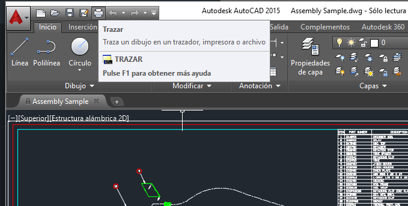Luego de ello, se te abrirá la siguiente ventana donde elegirás en la sección Impresora/Trazador la siguiente opción:
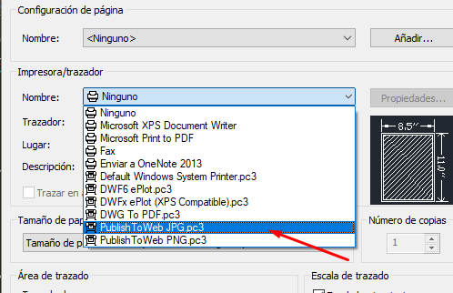Esta opción es la que AutoCAD trae por defecto como plotter para exportar a JPG o PNG si es que elegimos la opción de abajo. Al hacer clic en ella te aparecerá la siguiente ventana donde elegiremos la primera opción que es mantener la resolución por defecto.
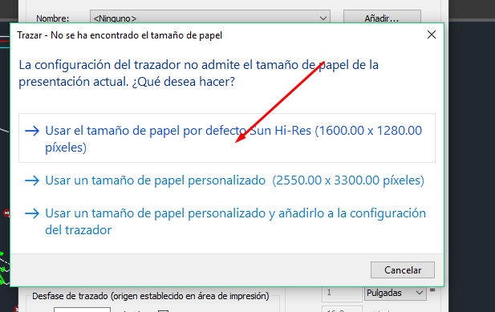Ahora iremos al área de trazado y elegiremos Ventana, esto hará que AutoCAD nos regrese a nuestro dibujo para que seleccionemos el área que deseemos exportar como JPG, una vez hecho eso, automaticamente nos regresará a la ventana de Trazar.
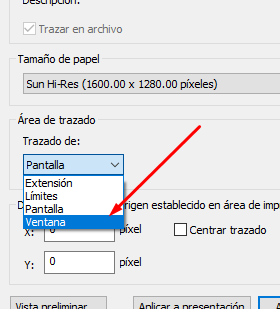Elegiremos Centrar Trazado para que la imagen quede mejor ubicada.
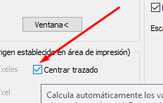Elegiremos Vista Preliminar para dar un vistaso de como quedará al final nuestra imagen.
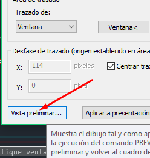Se nos abrirá la siguiente ventana donde apreciaremos el futuro resultado de la exportación, para salir de aquí solo debemos presionar la tecla SCAPE o presionar en la X que esta en la parte superior izquierda.
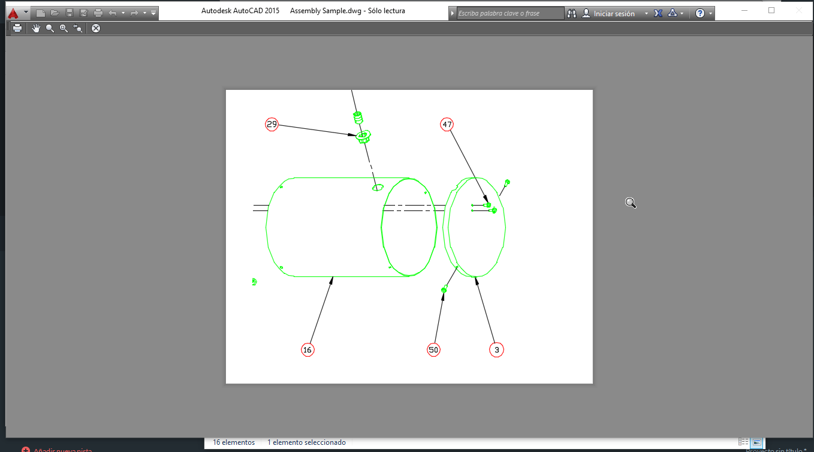Finalmente elegimos Aceptar para terminar la exportación.
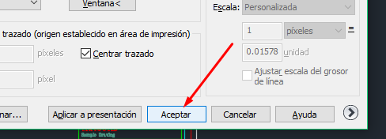Nos aparecerá una ventana para indicar donde deseamos guardar el archivo.
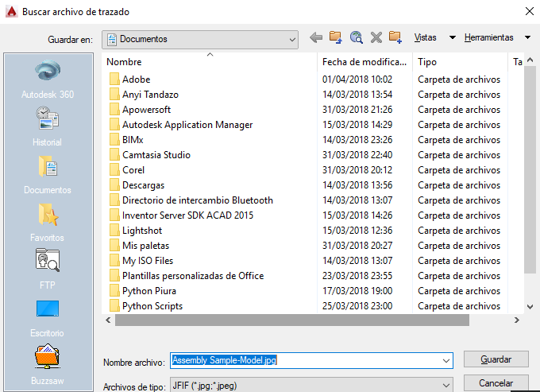Al abrir nuestra imagen veremos el siguiente resultado, obteniendo así una buena calidad de imagen al ser exportada, mucho mejor que la obtenida si usabamos la opcion JPGOUT.
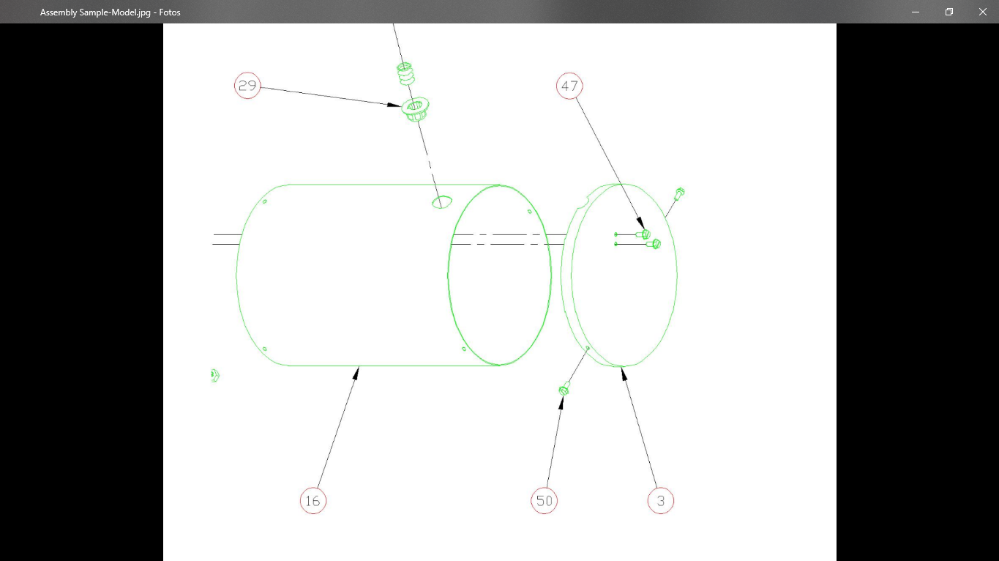Al usar JPGOUT obtuvimos la siguiente imagen, dejando mas que claro que la opción propuesta da un mejor resultado.
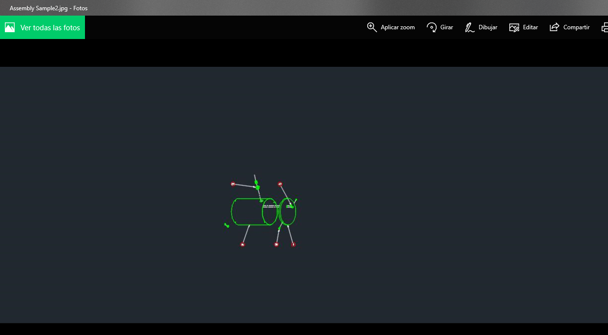Además te dejamos el vídeo que hicimos explicando como realizarlo mostrando también una imagen mas grande haciendo zoom en ella. Recuerda que puedes suscribirte a nuestro canal de Youtube para enterarte de más tutoriales.